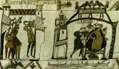

La tapisserie de Bayeux, réalisée dans les décennies des événements de , inclut dans un de ses
panneaux de broderie montrant la comète traversant le ciel

Et Pâques était au 14ᵉ jour avant les Calendes de mai. Alors il arriva qu'à travers toute l'Angleterre fut faite
dans les cieux une vision telle qu'aucun homme n'en avait vue auparavant. Des hommes dirent qu'il s'agissait de
l'étoile comète, que certains hommes appelaient l'étoile aux longs cheveux ; elle apparût la veille de Letania
Maior qui est le 8ᵉ jour avant la Calende de mai, et brilla ainsi pendant 7 nuits entières Anglo-Saxon Chronicle, edité par J.A. Giles, D.C.L, Londres, Henry G. Bohn, 1867.